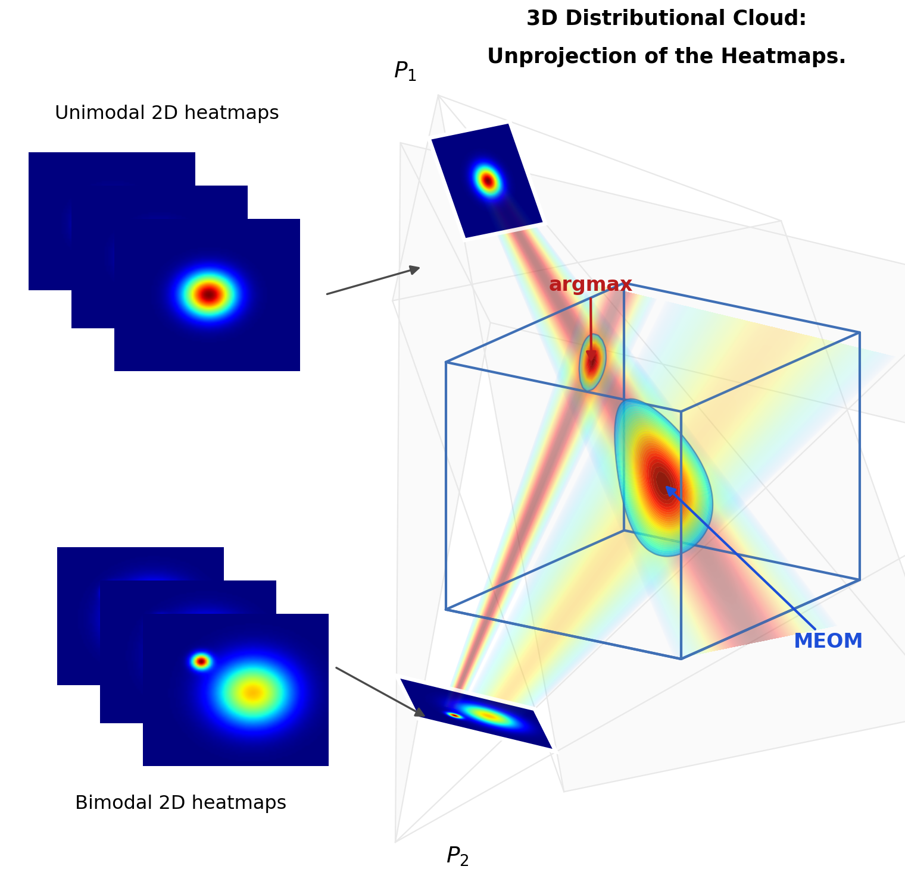

关于我
我是计算机视觉实验室（CVL）的博士研究生，隶属 林雪平大学电气工程系（ISY）。 我关注人工智能，尤其是不确定性量化：让神经网络能够感知自身预测中的不确定性，这是迈向安全、可信人工智能的关键一步。
我的博士研究将不确定性量化应用于计算机视觉任务，提升自动驾驶与机器人系统的安全性和可信性，涵盖回归、人体姿态估计与端到端自动驾驶。 博士课题属于 面向安全自主机器人系统的态势感知 （ELLIIT 项目 C08），同时为 隶属于瓦伦堡人工智能、自主系统与软件项目（WASP）研究生院。
攻读博士之前，我于 2020–2022 年在隆德大学获得机器学习硕士学位，毕业论文为《基于深度学习的车载毫米波雷达目标检测》。 2015–2019 年于北京航空航天大学获得自动化学士学位。 此前曾在安迅士通讯公司从事机器学习研发。
我担任 IJCV、Pattern Recognition Letters（3 次）、 CVPR 2025、CVPR 研讨会 SAIAD（2024–2026）以及 AAAI 2025 审稿人。
研究之余，我喜欢摄影与航拍风景摄像，打羽毛球，以及游泳。 我也是科幻文学与电影爱好者，如《火星救援》与《三体》。
新闻
- 获 WASP Research Stint Abroad 资助（约 14 万瑞典克朗），将赴荷兰代尔夫特理工大学（TU Delft）进行访问研究。
- 参加 剑桥大学 ELLIS Unit 概率机器学习暑期学校，并做海报展示，2026 年 7 月。
- 新获 Vinnova FFI 项目（2026）：Risk Assessment in Vision-Language-Action Models for Automated Vehicles ——研究视觉-语言-动作（VLA）模型在自动驾驶中的风险评估方法。 [链接]
- 通过中期答辩（half-time seminar，评议人：Fredrik Lindsten），2025 年 11 月 28 日。
- 参加国际计算机视觉暑期学校（Spatial Intelligence），2025 年 7 月。
- 论文 Hinge-Wasserstein: Estimating Multimodal Aleatoric Uncertainty in Regression Tasks 获 CVPR 研讨会 Safe Artificial Intelligence for All Domains（2024）Long Oral 证书。
研究
我的研究兴趣可分为：
（1）算法方向：不确定性量化、概率深度学习，以及面向回归与结构化预测的校准度量。
（2）应用方向：（i）端到端自动驾驶与碰撞风险估计。（ii）具有多模态偶然不确定性的人体姿态估计。

为深度回归开发稳健的不确定性评估指标（arXiv）。

端到端自动驾驶中基于损失预测的碰撞风险估计概览（arXiv）。

MEOM：多视角 Expected-OKS 最大化人体姿态三角化（arXiv）。
完整的论文与预印本列表见此处。
联系
邮箱：ziliang.xiong@liu.se
办公室：瑞典林雪平 Campus Valla，B 楼，入口 25，房间 2B:524